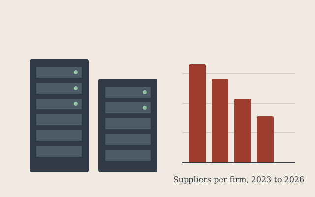

After a summer of outages, Europe's web shops start watching themselves around the clock
Small retailers that once learned about downtime from angry customers are now paying for monitoring that checks their sites every 30 seconds.
Technology, business and security from across Europe
Small retailers that once learned about downtime from angry customers are now paying for monitoring that checks their sites every 30 seconds.
Regional operator Kanaalnet has completed its fibre roll-out across Utrecht, Amersfoort and Zeist. The company says 212,000 homes can now order symmetrical gigabit connections and that copper lines will be switched off by mid-2028.
An industry survey of 900 European companies found that one in six unplanned outages last year came from an expired TLS certificate, usually after an automatic renewal job had been switched off and forgotten.

Mid-sized companies are consolidating hosting, monitoring and backup contracts with fewer providers, according to procurement data from 1,400 firms. The average number of infrastructure suppliers fell from 7.1 in 2023 to 4.3 this year.
The freight group has appointed Hanna Lindqvist as chief information security officer, weeks after it confirmed that a customer portal export had been offered for sale online. Nordwick says the file contained delivery addresses but no payment data.
Cyber claims at the insurer rose 38 per cent in the first nine months of the year. Most involved a compromised supplier rather than the policyholder's own systems, Pellmark said in its quarterly update.
Investigators in two countries seized a mirror of the defunct Cobalt Den marketplace, whose administrators disappeared last week with users' escrow deposits. Officials said the seized server would help identify vendors who moved to rival forums.
Justice ministers have agreed that a shared platform for requesting electronic evidence between member states should be live by the end of 2027. Prosecutors currently wait an average of ten months for data held by providers in another country.
Operators in Estonia, Latvia and Lithuania have asked regulators for priority grid connections, arguing that local capacity is needed to keep public services hosted inside the region.